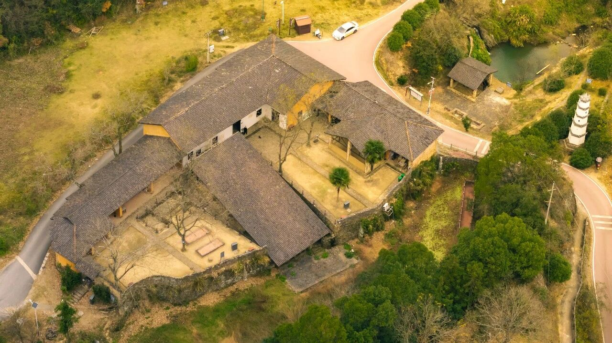
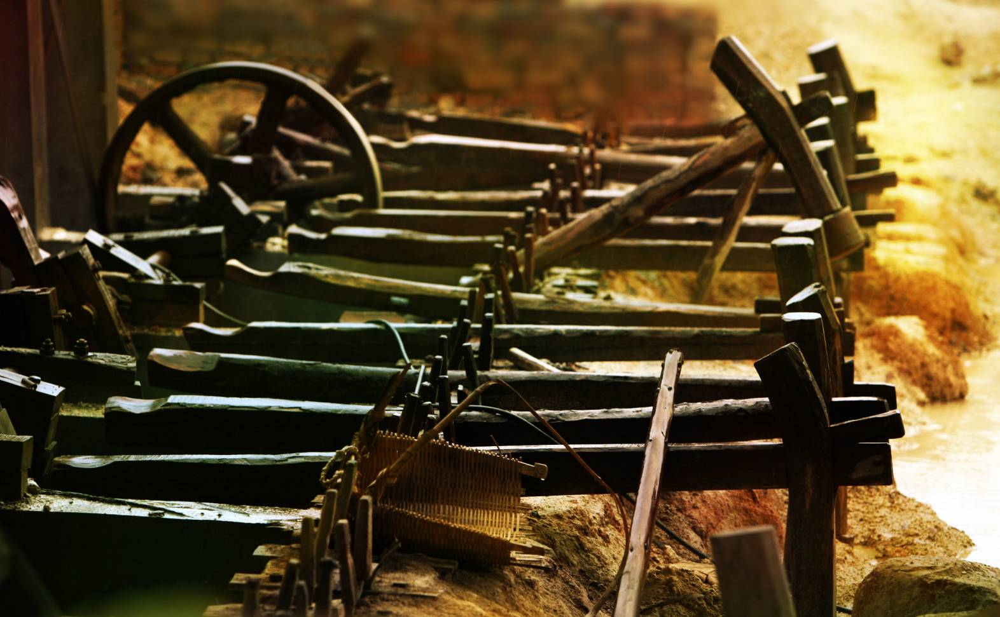
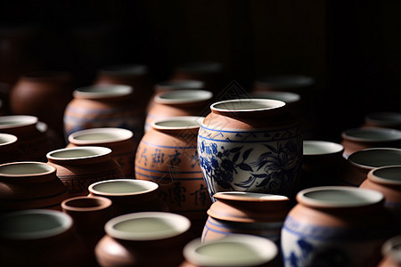
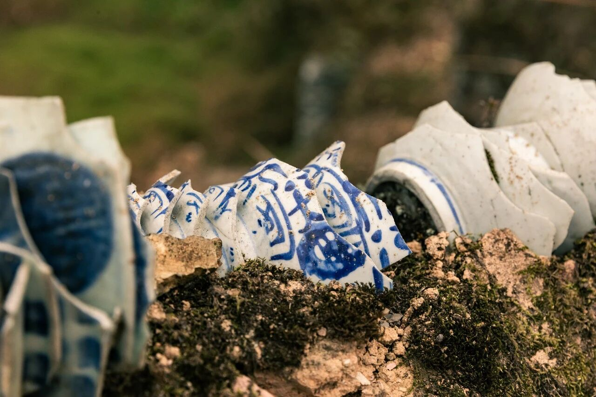
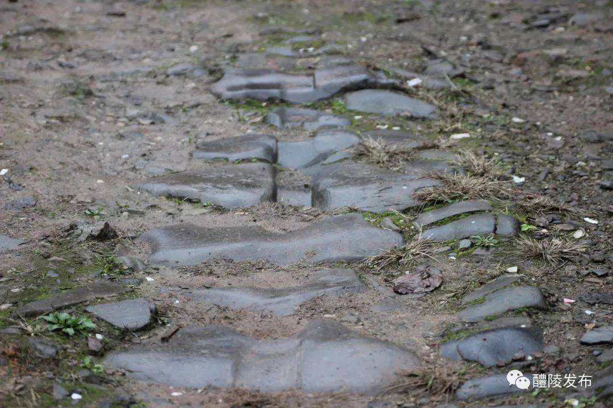
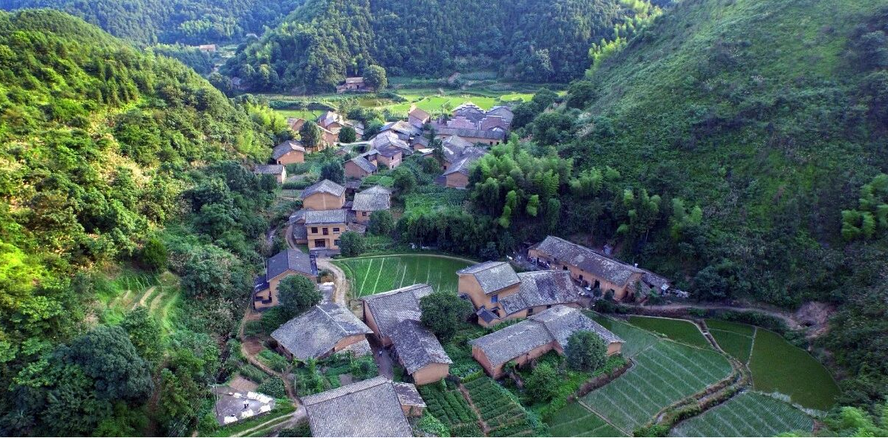
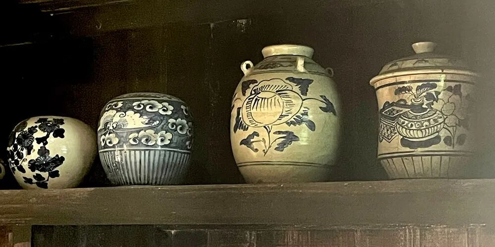
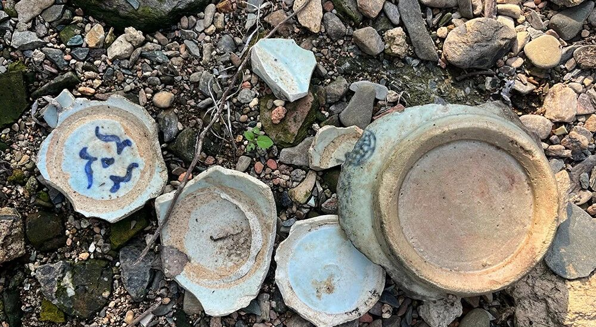

千百年来，人们在此抟泥为陶、火中取宝，生生不息。几经时光淘洗，窑火炽烈的土地，如今已变得葱绿清凉，静谧如斯。而窑火，“活”在了城区的现代厂房里，“活”在更多人的手中、心里。
沩山陶瓷发展编年史
| 时期 | 历史事件 |
|---|---|
| 东汉 | 醴陵左权楠竹山地区陶瓷生产已成为主要产业，至今已有1700多年历史 |
| 五代 | 开始烧制青瓷 |
| 宋元 | 沩山开始烧制陶瓷，以青瓷、青白瓷为主，约800年历史 |
| 元明清 | 窑业持续发展，鼎盛时期窑厂百余家，从业人员一万余人 |
| 清光绪元年(1875) | 醴陵人罗良西创办月形湾古窑厂 |
| 清光绪三十一年(1905) | 著名人士熊希龄与醴陵县人文俊铎赴沩山考察后，创制釉下五彩瓷 |
| 民国 | 沩山窑成为中国釉下五彩瓷发源地 |
| 1946年 | 沩山境内瓷厂减至36家，工人千余人 |
| 上世纪80年代初 | 沩山醴陵窑完全停止生产 |
| 2004年 | 文物专家在沩山发现大量与瓷业相关的历史文物遗迹 |
| 2013年 | 醴陵窑被公布为全国重点文物保护单位 |
| 2016年 | 沩山村里通了旅游环线 |
| 2017年 | “以文物保护利用助推精准扶贫”的复兴计划启动 |
| 2018年 | 入选中国历史文化名村、中国传统村落 |
| 2025年 | 枫树坡窑址考古发掘取得新发现 |
“小南京”之盛
鼎盛时期，沩山村中有窑厂百余家，从业人员一万余人，繁华一时，人称“小南京”。
民国《醴陵县志》记载：“东堡乡小沩山，地产白泥，溪流迅激，两岸多水碓以捣泥粉，声音交接，日夜不停，故瓷厂寝盛，今上下皆陶户，五方杂处。”
解读：东堡乡即今天的沩山镇，白泥即制瓷所需重要原材料高岭土。“五方杂处”说明当时从业者来自各地，极其繁华。
沩山村位于醴陵市沩山镇，坐落于四面山岭的盆地中央，是醴陵瓷业的发源地和釉下五彩瓷的发祥地。这个如今静谧的古村落，在清代却有着“小南京”的美称，这一称谓源自其瓷业鼎盛时期的繁华景象。
沩山村拥有得天独厚的制瓷资源：储量极丰的高岭土、满山茂盛的松木燃料以及湍急的沩水（用于推动水碓捣泥）。民国《醴陵县志》记载：“东堡乡小沩山，地产白泥，溪流迅激，两岸多水碓以捣泥粉，声音交接，日夜不停，故瓷厂寝盛，今上下皆陶户，五方杂处”。这段文字生动描绘了当年沩山村窑火不息、商贾云集的盛况。


鼎盛时期，沩山村拥有480余家窑厂，从业人员高达一两万人，加上家属和服务业人员，这个小山坳里曾聚居两万多人。作坊民宅挤满山坳，龙窑依山层叠，窑火昼夜不息。戏台、绸庄、饭馆一应俱全，来自各地的商贾在此云集，形成了“五方杂处”的人口格局。如此密集的人口和繁荣的商业，使这个深山村落仿佛重现了南京城的繁华景象，因此赢得了“小南京”的美称。当地甚至流传着“沩山人不吃隔夜米”的说法，足见当时经济的富足与生活的讲究。
“吱吱呀呀”的独轮车，驮着竹篓子包装的瓷器，沿着山脚下的古道奔向姜湾码头，从那里装船，由渌江转湘江，出洞庭过长江，进入千家万户，远销海内外。年复一年，醴陵瓷器就在这景象中扬名中国，扬名世界。
然而，随着20世纪50年代醴陵瓷业中心向交通更便利的城区转移，沩山村的窑厂和大量人口陆续外迁，村落才逐渐归于宁静。如今，这片土地上仍留存着宋至民国时期的窑址84座，连同瓷泥矿井、瓷片堆积、古道古桥等110余处制瓷相关文物点，漫山遍野的碎瓷片和古道上深深的独轮车辙印，静静诉说着昔日“小南京”的繁华往事。
在沩山村瓷业最鼎盛的岁月里，每年农历五月十六日，陶瓷祖师爷樊进德的生辰，是全村最隆重的日子。位于村中的大戏台上，必会请来最好的戏班子，连唱三天三夜大戏。台上锣鼓喧天，丝竹悠扬；台下人头攒动，叫好声此起彼伏。戏台四周，绸庄、饭馆、杂货铺一应俱全，商贾云集，吆喝声不绝于耳，繁华景象丝毫不亚于城市。



戏台之外，山脚下的古道上，又是另一番繁忙景象。瓷业工人们弓着腰，推着“吱吱呀呀”的独轮车，车上驮着装满瓷器的竹篓子，小心翼翼地一路向东。从沩山出发，经姜湾码头装船，顺渌江而下，转湘江，出洞庭，过长江，这些凝结着窑火与汗水的醴陵瓷器，就这样进入千家万户，走向五湖四海。
点点白帆，在江面上连成一线；声声号子，在水天之间久久回荡。正是通过这条水路，醴陵瓷器由此扬名中国，享誉世界。而沩山深处的“小南京”，也成了中国近代陶瓷史上一个响当当的名字。



进入二十世纪后，随着现代交通兴起，沩山深处的地理局限逐渐显现。崎岖的山路难以承载日益扩大的产业规模，陶瓷生产中心开始向交通更便利的醴陵城区转移。曾经日夜不熄的窑火，一盏一盏熄灭；曾经挤满山坳的窑工，一批一批离开。戏台的锣鼓声停了，饭馆的吆喝声歇了，连古道上独轮车的“吱呀”声也渐渐远去。村庄空了，曾经两万多人的“小南京”，人口锐减到不足百人。老屋在风雨中倾圮，古窑被荒草掩埋，只剩下漫山遍野的碎瓷片，在寂静中守望着那段繁华旧梦。
然而，沩山的故事并未就此终结。2004年，几位文物考古专家走进沩山。他们拨开齐腰的荒草，在月形湾的窑址前久久驻足，对着满地的青花瓷片惊叹不已。沩山作为醴陵瓷业发源地和釉下五彩瓷诞生地的独特价值，终于被重新发现。沉睡多年的古村落，第一次被写入文物保护名录。
2016年，一条崭新的旅游环线公路蜿蜒进山。这条柏油路，把沩山与山外的世界紧紧连在了一起。曾经因路而衰的古村，如今因路而兴。
2017年，一项名为“以文物保护利用助推精准扶贫”的复兴计划正式启动。古窑厂开始修缮，古道得以清理，惜字塔被重新加固。沉寂多年的沩山村，第一次有了机器的轰鸣声，只是这一次，不是为了烧窑，而是为了修缮历史。
2018年至今，游客开始涌入沩山。他们循着枫树坡古道的深深车辙，在月形湾亲手体验拉坯制瓷，在惜字塔前了解敬惜字纸的传统，在古洞天寺的晨钟暮鼓里寻访“第十三洞天”。村里开起了农家乐，办起了豆腐体验馆，种上了百亩玫瑰花。曾经外出务工的年轻人，纷纷拖家带口回到故乡。他们打扫祖宅，修缮老屋，用当年祖辈传下来的手艺，迎接八方来客。
今天的沩山村，又有了炊烟，又有了犬吠，又有了孩子的哭闹声和游客的欢笑声。山还是那座山，窑还是那些窑，只是从前的窑火，烧出了“小南京”的繁华；今天的窑火，在每一间体验坊的拉坯机里，在每一块青石板上，在每一个归乡人的眼睛里，重新点亮。
沩山，这座因瓷而生、因瓷而衰、又因瓷而兴的古村，终于在沉寂半个多世纪后，找回了自己的魂。